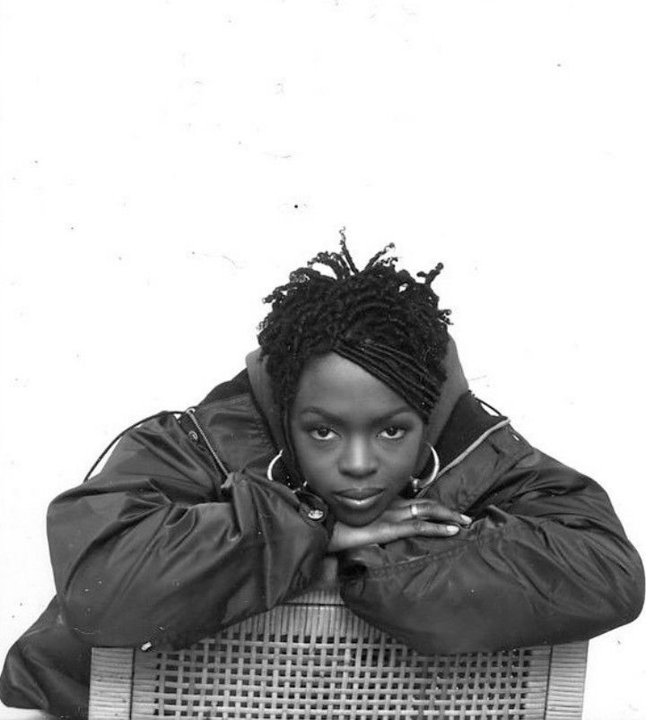

Artist · Songwriter · Fan Tribute
A fan-made portfolio celebrating the music and legacy of Lauryn Hill — built as a learning project, not an official site.

1998 · Columbia Records
The Miseducation of Lauryn Hill
Lauryn Hill rose to fame as part of The Fugees before releasing her landmark solo debut, The Miseducation of Lauryn Hill, in 1998. The album blended R&B, soul, hip-hop, and reggae, and went on to win multiple Grammy Awards. Known for her powerful voice and honest songwriting, she remains one of the most influential artists of her generation.
"I had to learn to love me — before I could love anyone else properly." — MTV Unplugged No. 2.0, 2001
[School bell rings] [Teacher: Ras Baraka] Please respond when I call your name... Alright, Kevin Charles... (Here) Jaris Boykins... (Here) Alicia Simmons... (Here) Phillip Valdez... (Here) Gabrielle Salado... (Here) Latoya Bradberry... (Right here) Antawn Mitchell... (Here) Shaquan Sutton... (Here) Cory Thomas... (Here) Tyron Lucas... (Here) Kennia Codwell...(Here) Tanika Marshall... (Here) Lauryn Hill... Lauryn Hill... Lauryn Hill... Walton Spates... (Here) [Music fades]
Yo, yo, yo, yo [Verse 1] It's funny how money change a situation Miscommunication lead to complication My emancipation don't fit your equation I was on the humble, you on every station Some wan' play young Lauryn like she dumb But remember not a game new under the sun Everything you did has already been done I know all the tricks from Bricks to Kingston My ting done made your kingdom wan' run Now understand, L-Boogie, non-violent But if a thing test me, run for mi gun Can't take a threat to mi new born son L been this way since creation A groupie call, you fall from temptation Now you wanna bawl over separation Tarnish my image in the conversation Who you gon' scrimmage, like you the champion? You might win some, but you just lost one [Refrain] You might win some, but you just lost one You might win some, but you just lost one You might win some, but you just lost one You might win some, but you just lost one [Verse 2] Now, now, how come your talk turn cold? Gained the whole world for the price of your soul Tryin' to grab hold of what you can't control Now you're all floss, what a sight to behold Wisdom is better than silver and gold I was hopeless, now I'm on Hope Road Every man wanna act like he's exempt Need to get down on his knees and repent Can't slick talk on the day of judgment Your movement's similar to a serpent Tried to play straight, how your whole style bent? Consequence is no coincidence Hypocrites always wanna play innocent Always want to take it to the full out extent Always want to make it seem like good intent Never want to face it when it time for punishment I know you don't wanna hear my opinion There come many paths and you must choose one And if you don't change then the rain soon come See, you might win some, but you just lost one [Refrain] You might win some, but you just lost one You might win some, but you just lost one You might win some, but you just lost one You might win some, but you just lost one [Chorus] You might win some, but you really lost one You just lost one, it's so silly, how come? When it's all done, did you really gain from (Gain from) What you done done? It's so silly, how come? (You done, how come?) You just lost one [Verse 3] Now don't you understand, man, universal law? What you throw out comes back to you, star Never underestimate those who you scar 'Cause karma, karma, karma comes back to you hard You can't hold God's people back that long The chain of Shaitan wasn't made that strong Trying to pretend like your word is your bond But until you do right, all you do will go wrong Now some might mistake this for just a simple song And some don't know what they have ‘til it's gone Now even when you're gone, you can still be reborn And, from the night can arrive the sweet dawn Now, some might listen and some might shun And some may think that they've reached perfection If you look closely you'll see what you've become 'Cause you might win some, but you just lost one [Refrain] You might win some, but you just lost one You might win some, but you just lost one You might win some, but you just lost one You might win some, but you just lost one [Chorus] You might win some, but you really lost one You just lost one, it's so silly, how come? When it's all done, did you really gain from What you done done? It's so silly, how come? You might win some, but you really lost one You just lost one, it's so silly, how come? When it's all done, did you really gain from What you done done? It's so silly, how come? You just lost one [Outro] You just lost one, you just lost one You just lost one, you just lost one (How come, you lost one? It's so dumb) You just lost one, you just lost one You just lost one What a bam-bam!... hehehe [Skit] Teacher: Alright people, I'm gonna write something on the board. Let's spell it. First letter Class: L, O, V, E Teacher: What's that? Class: Love Teacher: What? Class: Love! Teacher: How many people know any songs about love? Class: Right here! I know a lot about love Teacher: Tell me some titles, titles of some songs Boy: Love (Laughter) Teacher: There's a song called love? Boy: Yeah! Teacher: There's no song called love! Boy: Yeah, it's by Kirk Franklin Teacher: Ok ok, how it go? Boy: It go "Love" (Laughter) Teacher: Bet, bet, okay. Anybody else know any songs about love? (Mumbling) Teacher: I can't hear you Girl: I Will Always Love You Teacher: What about any movies about love? You know any movies about love? Girl: Titanic Teacher: Alright Boy: Romeo and Juliet Teacher: You didn't know that was about love ‘til you saw it on TV and they said it was about love
[Intro] Yo, y-yo, yo, y-yo Yo, uh, yo, y-yo, yo, y-yo [Verse 1] It could all be so simple (Ba-ba-ba-baby, baby, baby) But you'd rather make it hard (Huh, uh) Loving you is like a battle (It's like a battle) And we both end up with scars [Pre-Chorus] Tell me who I have to be (Who I have to be) To get some reciprocity See, no one loves you more than me (More than me) And no one ever will (No one ever will, yeah) [Verse 2] Is this just a silly game (Silly game) That forces you to act this way? (To act this way) Forces you to scream my name Then pretend that you can't stay (Yeah) [Pre-Chorus] Tell me, who I have to be (I know what we gotta do) To get some reciprocity See, no one loves you more than me And no one ever will [Chorus] No matter how I think we grow You always seem to let me know It ain't working (It ain't working, no), it ain't working And when I try to walk away You'd hurt yourself to make me stay This is crazy, this is crazy (Oh, this is crazy, uh-huh) [Verse 3] I keep letting you back in (You back in) How can I explain myself? (I don't understand why) As painful as this thing has been I just can't be with no one else [Pre-Chorus] See I know what we've got to do (Yeah) You let go (You let go), and I'll let go too (And I'll let go) Cause no one's hurt me more than you (No one's hurt me more than you) And no one ever will [Chorus] No matter how I think we grow You always seem to let me know It ain't working (It ain't working), it ain't working (It ain't working) And when I try to walk away You'd hurt yourself to make me stay This is crazy, (This is crazy) Oh, this is crazy (This is crazy) [Breakdown] (Care) Care for me, care for me I know you care for me (There) There for me, there for me Said you'd be there for me (Cry) Cry for me, cry for me You said you'd die for me (Give) Give to me, give to me Why won't you live for me? (Care) Care for me, care for me You said you'd care for me (There) There for me, there for me Said you'd be there for me (Cry) Cry for me, cry for me You said you'd die for me (Give) Give to me, give to me Why won't you live for me? (Care) Care for me, care for me You said you'd care for me (There) There for me, there for me Said you'd be there for me (Cry) Cry for me, cry for me You said you'd die for me (Give) Give to me, give to me Why won't you live for me? (Care) Care for me, care for me You said you'd care for me (There) There for me, there for me Said you'd be there for me (Cry) Give to me, give to me Why won't you live for me? (Give) Cry for me, cry for me You said you'd die for me (Care) Where? (There) Where? (Cry) Where were you (Give) When I needed you? (Care, there, cry, give) [Guitar Solo] [Outro] (Da, da, da, d-da, d-da) Where were you (Da, da, da, d-da, d-da) When I needed you? (Da, da, da, d-da, d-da) Where were you? (Da, da, da, d-da, d-da) You, you, you, you, you (Da, da, da, d-da, d-da) You, do, do, do, do, do, do, do (Da, da, da, d-da, d-da) Do, do, do, do, do, do (Da, da, da, d-da, d-da) (Da, da, da, d-da, d-da) (Da, da, da, d-da, d-da) (Da, da, da, d-da, d-da) (Da, da, da, d-da, d-da) (Da, da, da, d-da, d-da)
[Intro] One day, I'm gonna understand Zion [Verse 1] Unsure of what the balance held I touched my belly overwhelmed By what I had been chosen to perform But then an angel came one day Told me to kneel down and pray For unto me a man-child would be born Woe this crazy circumstance I knew his life deserved a chance But everybody told me to be smart "Look at your career," they said "Lauryn, baby use your head" But instead I chose to use my heart [Chorus] Now the joy of my world Is in Zion! (Zion, Zion!) Now the joy of my world Is in Zion! (Zion, uhh, Zion!) [Verse 2] How beautiful if nothing more Than to wait at Zion's door I've never been in love like this before Now let me pray to keep you from The perils that will surely come See life for you, my prince has just begun And I thank you for choosing me To come through unto life to be A beautiful reflection of His grace See I know that a gift so great Is only one God could create And I'm reminded every time I see your face [Chorus] That the joy (Joy) Of my world (World) Is in Zion (Is in Zion) Is in Zion (Is in Zion) Now the joy (Joy) Of my world (World) Is in Zion (Is in Zion, is in Zion) Now the joy (Joy) Of my world (World) Is in Zion (Is in Zion, is in Zion) Now the joy (Joy) Of my world (World) Is in Zion (Is in Zion, is in Zion) [Outro] Marching, marching, marching, marching (Marching) To Zion, marching, marching, marching (We gon' march) Marching, marching, marching, marching To Zion, marching, beautiful, beautiful, Zion Marching, marching, marching, marching To Zion, marching, marching, marching Marching, marching, marching, marching To Zion, marching, beautiful, beautiful, Zion Marching, marching, marching, marching (My joy, my joy) To Zion, marching, marching, marching (My joy, my joy) Marching, marching, marching, marching (My joy, my joy) To Zion, marching, beautiful, beautiful, Zion (My joy, my joy) Marching, marching, marching, marching (My joy, my joy) To Zion, marching, marching, marching (My joy, my joy) Marching, marching, marching, marching (You're the joy) To Zion, marching, beautiful, beautiful, Zion (Of my life) Marching, marching, marching, marching (It is in Zion) To Zion, marching, marching, marching (Zion) Marching, marching, marching, marching (You're the joy) To Zion, marching, beautiful, beautiful, Zion (You're the joy of my life) Marching, beautiful, beautiful Zion (Is in Zion, Zion) Marching, beautiful, beautiful Zion (It is in Zion) Marching, beautiful, beautiful Zion Marching, beautiful, beautiful Zion Marching, beautiful, beautiful Zion Marching, beautiful, beautiful Zion Marching [Skit] [Teacher] Okay, how many people here have ever been in love? I know none of the guys are gonna raise their hand. How many of y'all ever been in love? [Class] (Mumbling) [Teacher] I know none of the guys been in... we don't get in love, right? Oh! Let this black man right here tell what his idea of love is, 'cause not all the time we hear a young black man talk about love. About your personal definition, don't tell me what Webster thinks. Huh? [Boy] Willingness to do everything for that person [Teacher] Okay, everything like what? Explain. Let him talk, c'mon. If I asked him to talk about a fancy car, he'd be right on point. But we wanna talk about love. You can do it. (To another pupil) What do you think? You said you love somebody, you should know why you love them right? [Boy 2] The way they act [Teacher] Uh-huh [Boy 2] The way they carry themselves, stuff like that [Teacher] Okay [Girl] The way that they hang with they boys, and they just stand out. It's like sometimes it don't even matter like what they wear or what they look like. It's like, that way, you know? [Girl 2] Yeah [Girl] It's like you know you want to talk to him, because he stands out, it's like he got a glow or something [Teacher] That's deep [Boy 2] That's what I'm talking about [Teacher] I thought that was a beautiful point. Anyone else want to deal with that? [Girl 2] It's sometimes, like when they try to act funny in front of they boys, like when they get around say they love you. They can't love you. 'Cause love-love-love wouldn't do that [Girl 3] Love is not phony! [Class] (Laughter)
[Intro] Yo, 'member back on the bouley when cats used to harmonize like (Ooh, ooh-ooh, ooh) Yo, yo, my men and my women, don't forget about the deen (Ooh, ooh-ooh, ooh) The Sirat al-Mustaqim Yo, (Eheh) it's about a thing (Uh, yo, yo; ooh, ooh-ooh, ooh) If ya feel real good wavin' your hands in the air (What? What-woah) And lick two shots in the atmosphere (Yeah, yeah) Yeah, uh-yeah, yeah, yeah, yeah (Put them up, put them up; yeah, yeah) Yeah, uh-yeah, yeah, yeah, yeah (Put them up, put them up; yeah, yeah) Uh-yeah, yeah, yeah, yeah (Put them up, put them up; yeah, yeah) [Verse 1] It's been three weeks since you were looking for your friend The one you let hit it and never called you again (Uh) 'Member when he told you he was 'bout the Benjamins? (Uh-huh, yeah) You act like you ain't hear him then give him a little trim To begin, how you think you're really gon' pretend (Pretend) Like you wasn't down and you called him again? (Called him again, friend) Plus, when you give it up so easy you ain't even foolin' him (Him) If you did it then, then you'd probably **** again Talking out your neck, sayin' you're a Christian A Muslim, sleeping with the jinn Now that was the sin that did Jezebel in Who you gon' tell when the repercussions spin? Showing off your ass 'cause you're thinking it's a trend Girlfriend, let me break it down for you again You know I only say it 'cause I'm truly genuine Don't be a hard rock when you really are a gem Baby girl, respect is just a minimum (Minimum) Ni*** **** and you still defendin' 'em (Defendin' 'em) Now, Lauryn is only human (Human) Don't think I haven't been through the same predicament (I been there) Let it sit inside your head like a million women in Philly, Penn (Philly, Penn) It's silly when girls sell their souls because it's in ('Cause it's in) Look at where you be in, hair weaves like Europeans (Europeans) Fake nails done by Koreans [Refrain] Come again Yuh, a win-win, come again A win-win, come again (Yeah, yeah) My friend, come again [Chorus] Guys, you know you'd better watch out (Uh) Some girls, some girls are only about That thing, that thing, that thing That thing, that thing, that thing (Yuh, yum) [Verse 2] The second verse is dedicated to the men (The men) More concerned with his rims and his Timbs than his women Him and his men come in the club like hooligans Don't care who they offend, poppin' yang (Like you got yen) Let's stop pretend, the ones that pack pistols by they waist men Cristal by the case men, still in they mother's basement The pretty-face men claiming that they did a bid men Need to take care of they three or four kids And they face a court case when the child support late (The child support late) Money taking and heart breaking, now you wonder why women hate men (Why) The sneaky, silent men, the punk, domestic violence men (Why) Quick to shoot the semen, stop acting like boys and be men (Be men) How you gonna win when you ain't right within? (Be men) How you gonna win when you ain't right within? (Bredrin) How you gonna win when you ain't right within? (Be men) [Refrain] Uh-uh, come again (Uh-uh; yeah, yeah; come again) Yo-yo-yo, come again (Yeah, yeah; come again) The bredrin, come again (Yeah, yeah; come again) And sistren, come again (Yeah, yeah; come again) [Bridge] Watch out, watch out (Bom, bom, bom) Look out, look out (Bom, bom) Watch out, watch out (Bom, bom) Look out, look out Watch out, watch out (Bom, bom, bom) Look out, look out (Bom, bom) Watch out, watch out (Bom, bom) Look out, look out [Chorus] Girls, you know you'd better watch out (Uh, hahah) Some guys, some guys are only about That thing, that thing, that thing That thing, that thing, that thing Guys, you know you'd better watch out 'Cause girls, some girls are only about That thing, that thing, that thing That thing, that thing, that thing Some guys, some guys are only about that thing (Girls, you know you’d better watch out) Yuh Some guys, (Girls) some guys are only about that thing That thing, that thing, that thing (We takin' this back, yuh, haha) That thing, that thing, that thing (Takin' it back, yuh) [Skit/Outro] Class! Hey, we’ve got some very intelligent women here, man Do you think you’re too young to really love somebody? (No! No, no, I don’t think so) I say it for me, uh, I’m an adult I say, wait “You’re too young to be in love, this is silly You’re infatuated or whatever, you got nice jeans You wear fancy Adidas” I mean, it might be something I don’t know (It's the difference from loving somebody and being in love with somebody) Well, you tell me. What’s the difference? (Okay. You can love anybody but when you’re in love with somebody you’re looking at it like this—you’re taking that person for what he or she is no matter what he or she look like or no matter what he or she do) (You’re crazy! You fall in love, you can fall out of love) (You might stop being in love with them but you are not gonna stop loving that person) (Maybe they ain’t never been loved before or been in love before, they don’t know what the feeling is to be loved) (She poetic) She killed it, we could end that conversation with that, right?
[Intro] Yo hip-hop, started out in the heart Uh-huh, yo Now everybody tryin' to chart Say what? Hip-hop, started out in the heart Yo, now everybody tryin' to chart C'mon now, baby, c'mon now, baby, c'mon now, baby, c'mon, uhh C'mon now, baby, c'mon now, baby, c'mon now, baby, c'mon [Chorus] C'mon, baby, light my fire (Come on) Everything you drop is so tired (Everything) Music is supposed to inspire (Music is supposed to inspire) How come we ain't gettin' no higher? (How come, how come) [Verse 1] Now, tell me your philosophy On exactly what an artist should be Should they be someone with prosperity And no concept of reality? [Pre-Chorus] Now, who you know without any flaws That lives above the spiritual laws? And does anything they feel just because (Just because, just because) There's always someone there who'll applaud? [Chorus] C'mon baby light my fire (Come on) Everything you drop is so tired (Everything you drop is so tired) Music is supposed to inspire (What are we here for? What are we here for?) How come we ain't gettin' no higher? (Gettin' no higher) [Verse 2] I know you think that you've got it all And by making other people feel small Makes you think you're unable to fall But when you do, who you gonna call? [Pre-Chorus] See, what you give is just what you get (What you give is just what you get) I know it hasn't hit you yet (I know it hasn't hit you yet) Now, I don't mean to get you upset (Get upset, get upset) But every cause has an effect, uh-huh [Chorus] C'mon, baby, light my fire (Yeah) Everything you drop is so tired (Yeah) Music is supposed to inspire (Music is supposed to inspire) So, how come we ain't gettin' no higher? (We ain't no higher, we ain't no higher) [Verse 3] I cross sands in distant lands, made plans with the sheiks Why you beef with freaks as my album sales peak? Uhh All I wanted was to sell like five hundred And be a ghetto superstar since my first album, Blunted I used to work at Foot Locker, they fired me: I fronted Or I quitted, now I spit it, however do you want it? Now you get it! Writing rhymes, in the Range, with the frames lightly tinted Then send it to your block and have my full name cemented (Lauryn Hill!) And if your lines sound like mine I'm taking a percentage (ka-ching!) Unprecedented, and still respected when it's vintage I'm serious, I'm takin' over areas in Aquarius Runnin' red lights with my ten thousand chariots Just as Christ was a Superstar, you stupid, star! They'll hail you then nail you, no matter who you are They'll make you now then take you down, and make you face it If you slit the bag open, put your pinky in it and taste it [Chorus] C'mon, baby, light my fire Everything you drop is so tired (Everything you drop, everything you drop) Music is supposed to inspire (Oh yeah) How come we ain't gettin no higher? (We ain't getting no higher, getting no higher) C'mon, baby, light my fire (C'mon baby light my fire) Everything you drop is so tired (Everything you drop is so tired) Music is supposed to inspire How come we ain't gettin no higher? (How come we ain't gettin no higher?) C'mon, baby, light my fire (Come on baby) Everything you drop is so tired (Everything you drop is so tired) Music is supposed to inspire How come we ain't gettin no higher? (We ain't no higher)
[Intro] The unexpected Multi-dimensional Unexpected sound of the Refugee All-Stars [Verse 1] The sweetest thing I've ever known Was like the kiss on the collarbone The soft caress of happiness The way you walk, your style of dress I wish I didn't get so weak Ooh, baby, just to hear you speak Makes me argue just to see How much you're in love with me [Chorus] See like a queen, a queen upon her throne It was the sweet, sweet, sweetest thing I've known It was the sweet, sweet, sweetest thing I've known [Verse 2] I get mad when you walk away (Don't walk away from me, c’mon now) So I tell you leave, when I mean stay Warm as the sun dipped in black Fingertips on the small of my back More valuable than all I own Like your precious, precious, precious, precious, precious, baby, dark skin tone. [Chorus] It was the sweet, sweet, sweetest thing I've known It was the sweet, sweet, sweetest thing I've known It was the... [Bridge] Ah I tried to explain Ah...but baby, it's in vain [Verse 3] Speaking on my mother's phone The touching makes me think I'm grown (You ain't grown) Sweet prince of the ghetto (Sweet prince of the ghetto) Your kisses taste like Amaretto Intoxicating (Intoxicating) Oh, so intoxicating (Intoxicating) How sad (So sad), how sad that all things come to an end [Chorus] But then again (Again), I'm, I'm not alone It was the sweet, sweet, sweetest thing I've known [Outro] Ah I sometimes watch you in your sleep Ah Excuse me if I get to deep (Ha)
[Intro: D'Angelo & Lauryn Hill] Oh, oh, oh Mmm, yeah, yeah Oh, oh Oh-oh, oh Oh yeah (Oh) Oh, oh (Oh, oh, oh, oh, oh) Yeah, yeah, yeah, yeah (Yeah, yeah) Yeah, oh, oh, oh [Verse 1: Lauryn Hill] Now the skies could fall Not even if my boss should call The world, it seems so very small 'Cause nothing even matters at all See, nothing even matters See, nothing even matters at all Nothing even matters Nothing even matters at all [Verse 2: D'Angelo] See, I don't need no alcohol Your love make me feel ten feet tall (Yeah) Without it, I'd go through withdrawal 'Cause nothing even matters at all Nothing even matters Nothing even matters at all Nothing even matters Nothing matters at all [Verse 3: Lauryn Hill] These buildings could drift out to sea Some natural catastrophe Still, there's no place I'd rather be 'Cause nothing even matters to me (Ooh) See, nothing even matters (Yeah) See, nothing even matters to me Nothing even matters (Oh) Nothing even matters to me [Verse 4: D'Angelo & Lauryn Hill] You're part of my identity I sometimes have a tendency (Ooh, oh) To look at you religiously (Baby, baby) 'Cause nothing even matters, to me Nothing even matters Nothing even matters to me (Nothing even matters) Said it don't matter, baby, baby Don't matter [Verse 5: Lauryn Hill & D'Angelo] Now you won't find me at no store I have no time for manicures With you it's never either-or (Oh) 'Cause nothing even matters no more See, nothing, it don't matter See, nothing even matters no more Nothing even matters Nothing even matters no more [Verse 6: D'Angelo & Lauryn Hill] Now my team could score (Oh) And make it to the Final Four (Ooh) Just repossessed my four by four (Yeah, yeah, yeah, take it) 'Cause nothing even matters no more (No more, no more) Nothing even matters (No more, uh) Nothing even matters no more (No, oh-oh) Nothing even matters (No, oh-oh) Oh, oh, oh [Outro: Lauryn Hill & D'Angelo] To me, to me (No, nothing) To me, to me (No, nothing, no, oh, oh) To me, to me (Nothing even matters for you) To me, to me (One more time; more than you do) [Non-Lyrical Vocals]
[Chorus] Everything (Everything) is everything (Is everything) What is meant to be will be After winter (After winter) must come spring (Must come spring) Change, it comes eventually Everything (Everything) is everything (Is everything) What is meant to be will be (Understand that everything is everything) After winter (After winter) must come spring (Must come) Change, it comes eventually [Verse 1] I wrote these words (I wrote these words) for everyone Who struggles in their youth Who won't accept deception in Instead of what is truth (Gotta know the truth, y'all) It seems we lose the game Before we even start to play Who made these rules? (Who made these rules?) We're so confused (We're so confused) Easily led astray Let me tell ya that... [Chorus] Everything is everything Everything is everything (Everything is everything) Everything is everything (Everything) After winter (After winter) must come spring Everything is everything (Yo, yo, yo-yo, yo, yo, yo, uh) [Verse 2] Our philosophy possibly speak tongues Beat drum, Abyssinian, street Baptist (Word) Rap this in fine linen (Word), from the beginning My practice extending across the atlas, I begat this Flipping in the ghetto on a dirty mattress You can't match this rapper slash actress More powerful than two Cleopatras Bomb graffiti on the tomb of Nefertiti (Ooh, uh) MCs ain't ready to take it to the Serengeti My rhymes is heavy like the mind of sister Betty (El Shabazz!) L-Boogie spars with stars and constellations (What?) Then came down for a little conversation (Huh) Adjacent to the king, fear no human being Roll with cherubims to Nassau Coliseum (What?) Now hear this mixture (Uh), where Hip-Hop meets scripture Develop a negative into a positive picture [Chorus] Now everything (Everything, y'all) is everything (Everything, y'all) What is meant to be will be (What is meant to be will be, yeah) After winter (After winter) must come spring (Must come spring) Change, it comes eventually (Change, it comes eventually) [Verse 3] Sometimes it seems (Sometimes it seems) we'll touch that dream (We'll touch that dream) But things come slow or not at all (They come slow, know what I mean?) And the ones on top (And the ones on top) won't make it stop (They won't make it stop) So convinced that they might fall Let's love ourselves and we can't fail To make a better situation (Better situation, uh-uh) Tomorrow (Tomorrow), our seeds will grow (Our seeds will grow) All we need is dedication Let me tell ya that [Chorus] Everything is everything (Everything is everything) Everything is everything Everything is everything (Everything is everything) After winter (After winter) must come spring (Must come spring) Everything is everything (Everything is everything) Everything (Everything) is everything (Is everything) What is meant to be will be (What is meant to be will be) After winter (After winter) must come spring (Must come spring) Change, it comes eventually (Change, it comes eventually) [Outro] La-la-la-la-la (Everything) La-la-la-la-la (Everything is everything) La-la-la-la-la (La-la-la, la-la-la-la-la) La-la-la-la-la La-la-la-la-la La-la-la-la-la (La-la-la, la-la-la-la-la) La-la-la-la-la La-la-la-la-la (Tell your children) La-la-la-la-la (Oh-oh-oh-oh)
[Verse 1] My world, it moves so fast today The past, it seems so far away And life squeezes so tight that I can't breathe And every time I've tried to be what someone else has thought of me So caught up, I wasn't able to achieve [Chorus] But deep in my heart, the answer, it was in me And I made up my mind to define my own destiny [Verse 2] I look at my environment And wonder where the fire went What happened to everything we used to be I hear so many cry for help Searching outside of themselves Now I know that His strength is within me [Chorus] And deep in my heart, the answer, it was in me And I made up my mind to define my own destiny (And deep in my heart) And deep in my heart, the answer, it was in me And I made up my mind to define my own destiny
[Refrain] When it hurts so bad (When it hurts so bad) When it hurts so bad (When it hurts so bad) Why's it feel so good? (When it hurts so bad) (When it hurts so bad) When it hurts so bad (When it hurts so bad) When it hurts so bad (When it hurts so bad) Why's it feel so good? (When it hurts so bad) (When it hurts so bad) [Verse 1] I loved real, real hard once But the love wasn't returned Found out the man I'd die for He wasn't even concerned I tried, and I tried, and I tried To keep him in my life (To keep him in my life) I cried, and I cried, and I cried But I couldn't make it right [Pre-Chorus] But I, I loved the young man And if you ever been in love Then you'd understand [Chorus] That what you want might make you cry What you need might pass you by If you don't catch it If you don't catch it, if you don't catch it And what you need ironically (Ironically) Will turn out what you want to be (What you want to be) If you just let it (if you just let it) If you just let it (if you just let it) [Verse 2] See, I thought this feeling, it was all that I had But how could this be love And make me feel so bad? (Gave up my power) Gave up my power, I existed for you But whoever knew, the voodoo you'd do [Pre-Chorus] But I, I loved the young man (Uh-huh) And if you ever been in love Then you'd understand [Chorus] That what you want might make you cry What you need might pass you by If you don't catch it (If you don't— if you don't—) (If you don't— if you don't—) And what you need ironically Will turn out what you want to be If you just let it (If you don't— if you don't—) (If you don't— if you don't—) See what you want might make you cry (If you don't— if you don't—) What you need might pass you by (If you don't— if you don't—) If you don't catch it (If you don't— if you don't—) (If you don't— if you don't—) And what you need ironically (If you don't— if you don't—) Will turn out what you want to be (If you don't— if you don't—) If you just let it If you just let it [Refrain] When it hurts so bad (When it hurts so bad) When it hurts so bad (When it hurts so bad) Why's it feel so good? (When it hurts so bad) (When it hurts so bad) When it hurts so bad (When it hurts so bad) When it hurts so bad (When it hurts so bad) Why's it feel so good? (When it hurts so bad) (When it hurts so bad) When it hurts so bad (When it hurts so bad) So bad (When it hurts so bad) (When it hurts so bad) [Skit: Teacher, Boy & Girl] You ain't said nothin' Why you ain't say somethin' to me? I feel like love right now is like confusion It's like people think they love somebody When they don't really love somebody Like I thought I was in love with this girl, but I really wasn't It's like now, I don't feel about her Ok Alright You think that TV and music have somethin' to do with Why people are always confused about love? Yes! Why? 'Cause today we listen to a lot of TV a lot of music And it sounds nice, but it may not always be right for you We need to put you on a bullhorn Let you ride around Newark
[Intro] Now, I don't I used to love him, now I don't Now, I don't [Verse 1: Lauryn Hill] As I look at what I've done (What I've done) The type of life that I've lived (Life that I've lived) How many things I pray the father will forgive One situation (Situation, uh-uh) involved a young man He was the ocean (Uh-uh) and I was the sand He stole my heart like a thief in the night Dulled my senses and blurried my sight And I used to love him [Chorus] I used to love him, but now I don't Now I don't I used to love him, but now I don't Now I don't [Verse 2: Mary J. Blige & Lauryn Hill] I chose the road of passion and pain (Passion and pain) Sacrificed too much and waited in vain Gave up my power; ceased being queen Addicted to love like the drug of a fiend See, torn and confused, wasted and used Reached the crossroad, which path would I choose? Stuck and frustrated, I waited, debated For something to happen that just wasn't fated Thought what I wanted was something I needed When momma said no then I just should have heeded Misled, I bled 'til the poison was gone And, out of the darkness, arrived the sweet dawn [Chorus] Now I don't I used to love him, but now I don't Now I don't I used to love him, but now I don't Now I don't [Verse 3: Lauryn Hill & Mary J. Blige] Father you saved me and you showed me that life Was much more than being some foolish man's wife Showed me that love was respect and devotion Greater than planets and deeper than any oceans See, my soul was weary, but now it's replenished Content because that part of my life is finished I see him sometimes and the look in his eye Is one of a man who's lost treasures untold But my heart is gold, see, I took back my soul And totally let my creator control The life which was his, the life which was his to begin with [Chorus] Now I don't I used to love him, but now I don't Now I don't I used to love him, but now I don't Now I don't I used to love him, but now I don't Now I don't I used to love him, but now I don't Now I don't [Outro] I used to love him, but now I don't I used to love him, but now I don't I used to love him, but now I don't See, I used to love him
[Intro: Shelly Thunder] Forgive us our trespasses as we forgive those that trespass against us Although them again we will never, never, never trust Hoo-hoo-hoo-hoo-hoo! Them nuh know what them do Dig out your eye, while I'm sticking like glue Fling, skin, grin, while them plotting for you, true! [Chorus: Lauryn Hill & Shelly Thunder] Forgive them, Father, for They know not what they do (Me a tell you, dem nuh know) Forgive them, Father, for They know not what they do (Fi be real, them nuh have a clue!) [Verse 1: Lauryn Hill] Beware the false motives of others Be careful of those who pretend to be brothers And you never suppose it's those who are closest to you To you They say all the right things to gain their position Then use your kindness as their ammunition To shoot you down in the name of ambition, they do Oh [Chorus: Lauryn Hill] Forgive them, Father, for They know not what they do Forgive them, Father, for They know not what they do [Verse 2: Lauryn Hill] Why every Indian wanna be the chief? Feed a man 'til he full and he still want beef Give me grief, try to tief off my piece Why for you to increase, I must decrease? If I treat you kindly, does it mean that I'm weak? You hear me speak and think I won't take it to the streets I know enough cats that don't turn the other cheek But I try to keep it civilized, like Menelik And other African czars, observing stars with war scars Get yours in this capitalistic system So many caught or got bought you can't list them How you gon' idolize the missing? To survive is to stay alive in the face of opposition Even when they coming, gunning, I stand position L known the mission since conception Let's free the people from deception If you looking for the answers, then you gotta ask the questions And when I let go, my voice echoes through the ghetto Sick of men trying to pull strings like Geppetto Why black people always be the ones to settle? March through these streets like Soweto, uhh [Bridge: Lauryn Hill] Like Cain and Abel, Caesar and Brutus Jesus and Judas, backstabbers do this [Chorus: Lauryn Hill] Forgive them, Father, for They know not what they do Forgive them, Father, for They know not what they do [Verse 3: Lauryn Hill] It took me a little while to discover Wolves in sheep coats who pretend to be lovers Men who lack conscience will even lie to themselves, to themselves A friend once said, and I found to be true That everyday people, they lie to God too So, what makes you think, that they won't lie to you? [Chorus: Lauryn Hill & Shelly Thunder] Forgive them, Father, for They know not what they do (Forgive them, forgive them) Forgive them, Father, for They know not what they do (Forgive them, forgive them) [Verse 4: Shelly Thunder & Lauryn Hill] Gwan like dem love you, while dem rip you to shreds Trample pon yuh heart, and leff you fi dead Dem a yuh friend, who you depend pon, from way back when ([?] to grace) But if you, gi' dem yuh back, then you must meet yuh end Dem nuh know what dem do do (Who's gonna be the one?) Dem nuh know what dem do do (Gotta be the one to say) Dem nuh know, dem nuh know, dem nuh know, dem nuh know Dem nuh know what dem do do (Oh, yeah, oh) [Outro: Lauryn Hill] (Forgive them, Father, forgive them, Father...) [Skit: Teacher, Boy & Girl] What do you think? It's just happenin', like things just become annoying and then like twenty-four-seven thinkin' about the girl and stuff like that and then you like— if you do somethin' wrong, you like, oh, does she hate me, right? You wanna know what they're thinkin' Yeah, yeah So, what— what she feels— hold! What she feels is important to you? Right Huh? Why? Because... I want her to still love me, but, you know, but— see, but, I know she still like me 'cause, you know, a little eye contact. 'Cause I don't want her no more, but— Alright, you talkin' 'bout somebody, you love somebody
[Verse 1] I was just a little girl (Little girl) Skinny legs, a press and curl (Press and curl) My mother always thought I'd be a star (My mom always thought I'd be a star) But way before the record deals Streets that nurtured Lauryn Hill (Uh-huh) Made sure that I'd never go too far (Oh wah, oh wah, yo) [Chorus] Every ghetto, every city And suburban place I been Make me recall my days, in New Jerusalem (You know, uh-huh) [Verse 2] Story starts in Hootaville (Hootaville) Grew up next to Ivy Hill When kids were stealing quartervilles for fun "Kill the Guy" in Carter Park (Uh) Rode a Mongoose 'til it's dark Watching kids show off the stolen ones [Chorus] Every ghetto (Every ghetto), every city (Every city) And suburban place I been (And suburban place I been) Make me recall my days, in the New Jerusalem (Oh woah, oh, yo) [Refrain] You know it's hot (You know it's hot), don't forget, what you got Looking back... (Looking back) looking back, looking back, looking back You know it's hot, don't forget, what you got Looking back... looking back, looking back, looking back [Verse 3] Bag of Bontons, twenty cents and a nickel (Well, that's a quarter) Springfield Ave. had the best popsicles Saturday morning cartoons and Kung-Fu (Wuh-TAH!) Main street roots tonic with the dreads A beef patty and some coco bread Move the patch from my Lee's to the tongue of my shoes (Uh-uh, uh-uh-uh) 'Member, Freling-Huysen used to have the bomb leather Back when Doug Fresh and Slick Rick was together Looking at the crew, we thought we'd all live forever, yeah [Refrain] You know it's hot (You know it's hot), don't forget, what you got (You know it's hot) Looking back... (Looking back) looking back, looking back, looking back You know it's hot (Uh, you know it's hot), don't forget, what you got (You know it's hot) Looking back... (Looking back) looking back, looking back, looking back [Verse 4] Drill teams on Munn street 'Member when Hawthorne and Chancellor had beef (Yo) Moving Records was on Central Ave I was there at dancing school (Uh-huh) South Orange Ave. at Borlin pool Unaware of what we didn't have Writing my friends' names on my jeans with a marker July 4th races outside Parker Fireworks at Martin Stadium (Uh, uh-uh-uh, uh-uh-uh) The Untouchable P.S.P. (S.P.) Where all them crazy niggas be And car thieves got away through Irvington (Skrrrt, lock it up, uh, uh) Hillside brings beef with the cops Self Destruction record drops And everybody's name was Muslim (Children playing, women producing) Sensations and eighty-eight Attracted kids from out of state (Uh-uh, uh-uh) And everybody used to do the wop (Wop it out, wop it out, wop it out) Jack ya, jack ya, jack ya body Nah, the BizMark used to amp up the party I wish those days, they didn't stop (I wish those days didn't stop) [Chorus] Every ghetto (Every ghetto), every city And suburban place I been (And suburban place I been) (Every ghetto) Make me recall my days, in New Jerusalem (Every city) [Refrain] You know it's hot (You know it's hot), don't forget, what you got Looking back... (Looking back) looking back, looking back, looking back You know it's hot, don't forget, what you got (You know it's hot) Looking back... looking back, looking back, looking back (Looking back) You know it's hot, don't forget, what you got (You know it's hot) Looking back... looking back, looking back, looking back (Looking back) [Outro] Looking back, looking back, looking back Looking back, looking back, looking back (Looking back) Looking back (Looking back, looking back, looking back), looking back, looking back Looking back, looking back (Looking back), looking back Looking back, looking back, looking back [Skit: Teacher, Boy, Girl] What do you think about love? Come on Okay, Laurence Love... Don't laugh, yo! Yo, he's 'bout to give us a dissertation, the way he said that Go ahead, breakdown, breakdown Well, love is just a feeling Love is a feeling, it's like, it's just when you like somebody and you're gonna fall in love with them Okay And you just hope they feel the same way like you do towards them Okay, okay This gettin' a lil' deep
Tip: Please rerfesh the page to reset the playback.
Doo Wop (That Thing) — Official Video
Disclaimer: This site claims no ownership over the materials used and operates under the Fair Use guidelines of copyright law for purposes such as criticism, comment, news reporting, teaching, scholarship, and research. If you are the rightful owner of any content displayed here and wish for it to be removed, please contact the administrator.
Tip: Please use the map on the right.